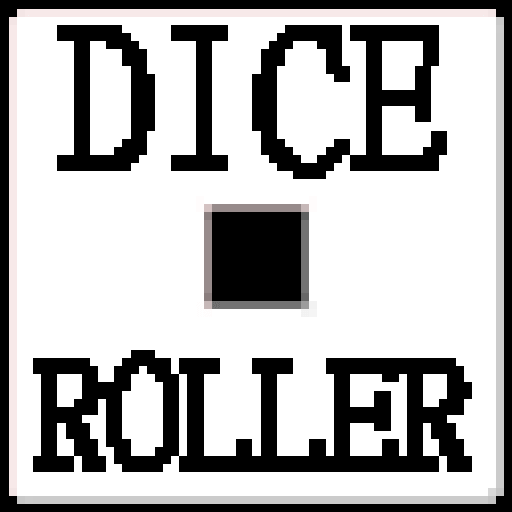
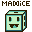
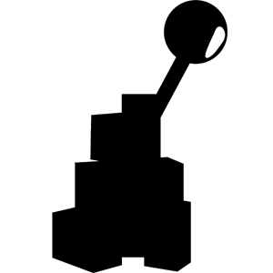
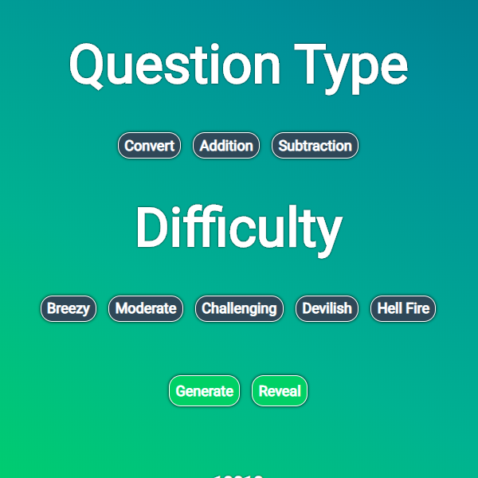
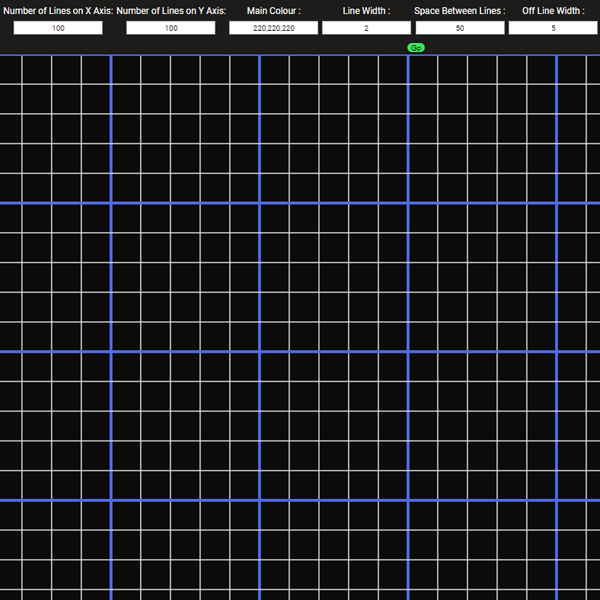

Dice Roller 2.0
A small android application about dice I developed 2 years ago. It features multiple dice related minigames and many dice skins which can be switched out at will. All of this add up to create quite a meaty dice related app compared
to others out there

Down Miner
A brand new game 2D android game about mining down. In a world that's infinitely deep and procedurally generated, use dynamite and drills to get down as far as possible. This time, the art has been done by Jessica Wenborn and the music by Mason Hunnisett.
To be Released

MiniGame Pile
An open source collection of minigames built by the community.

Binary Question Generator
An open source website that allows people to generate binary questions. It was mostly developed to help Computer Science students practice their binary skills.
HTML
CSS
JavaScript

Graph Paper Creator
Graph Paper Creator is a tool that people can use to create custom graph lines. An example usecase would be projecting the website on a board and then using pen to create a graph. Graph Paper Creator is incredibly customisable and
gives the user the ability to control everything about the grid.
HTML
CSS
JavaScript